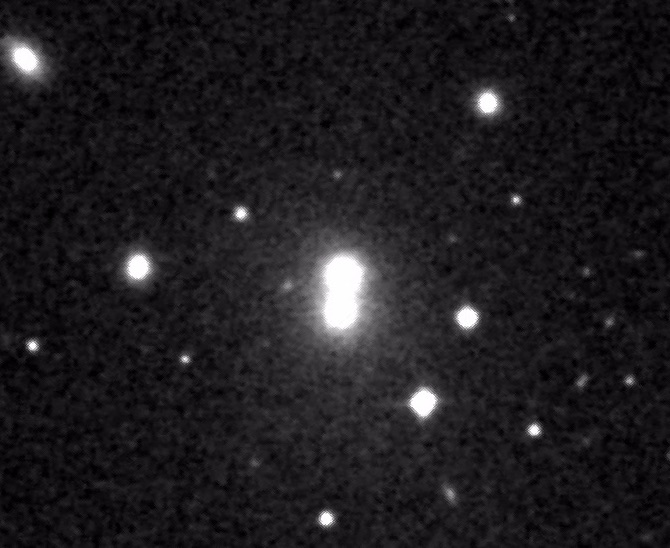
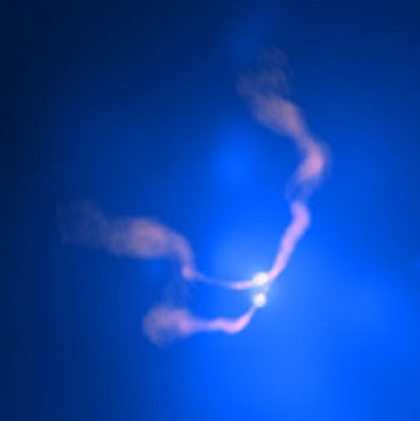
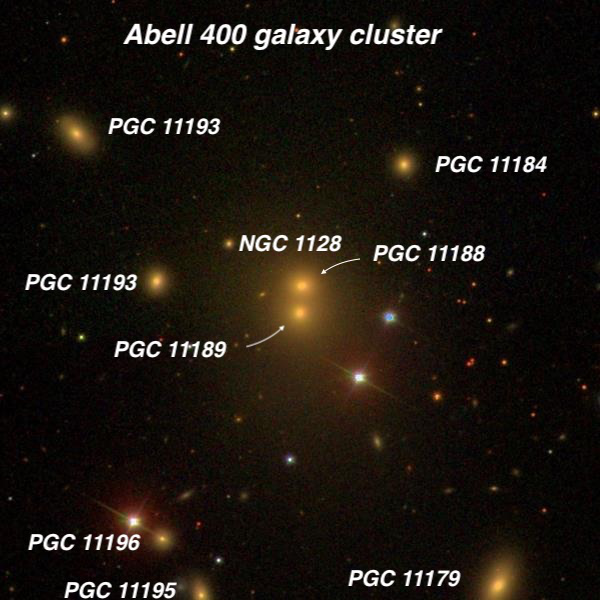
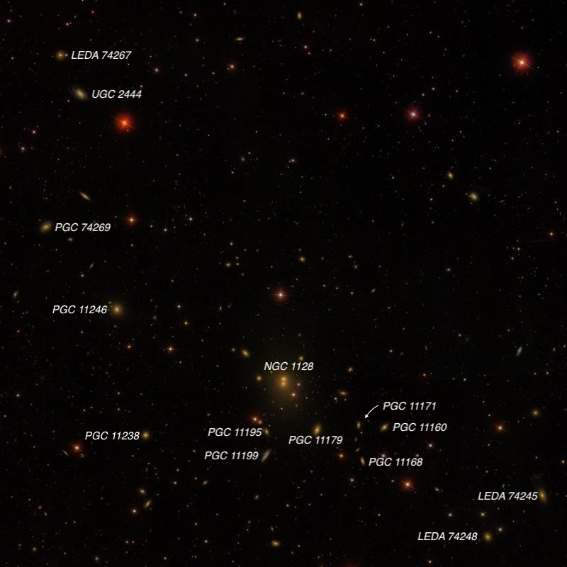

NGC 1128 - binary supermassive black holes and twin radio jets
- Aliases: 3C 75 = MCG +01-08-027 = CGCG 415-041 = III Zw 52 = PGC 11188 + 11189
- RA: 02 57 41.6, Dec: +06 01 28 (Cetus)
- Type: Brightest Cluster Galaxy (BCG); "Dumbbell" pair; twin AGN
- Size: 0.9'x0.4'
- Mag: V = 12.7, B = 13.8
- Distance: ~300 million l.y.
NGC 1128 was discovered by American astronomer Lewis Swift on 8 October 1886. Through his 16-inch refractor in Rochester, New York, he recorded "extremely faint, small, little elongated, 2 faint stars close [West]". Unfortunately, there is no matching galaxy near Swift's position. But Harold Corwin found that 3C 75 (radio designation), the brightest galaxy in Abell Galaxy Cluster (AGC) 400 is 5 minutes of RA further east and two nearby mag 12-13 stars fit Swift's description. Swift's error amounts to over 1¼ degrees on the sky, but he apparently made a similar error on several others discoveries the same month (NGC 885, 1677, 1689). NGC 1128 is a dumbbell-shaped merging duo (PGC 11188 and 11189) at the center of Abell Galaxy Cluster 400. The cluster itself lies at a distance of ~300 million light years (z = .023) with over 100 members listed in NED. Here's the POSS2 red image showing the dumbbell appearance north-south. The two components are separated by only 16". You'll find this pair in the northeast corner of Cetus, 2.2 degrees NNW of mag 2.5 Alpha Ceti (Menkar).

Due to the poor NGC position, the galaxy is perhaps better known in the professional literature by its radio designation -- 3C 75. And its quite a spectacular radio source with twin radio tails from each AGN nucleus. A 2017 study by Molnar et al: "Hydrodynamical simulations of colliding jets: modeling 3C 75" found: "Radio observations suggest that 3C 75, located in the dumbbell shaped galaxy NGC 1128 at the center of Abell 400, hosts two colliding jets...When one jet is significantly faster than the other and the impact parameter is small, the jets merge; the faster jet takes over the slower one. In the case of merging jets, the oscillations of the filaments, in projection, may show a feature that resembles a double helix, similar to the radio image of 3C 75. Thus we interpret the morphology of 3C 75 as a consequence of the collision of two jets with distinctly different speeds [roughly 1200 kilometers per second] at a small impact parameter, with the faster jet breaking up into two oscillating filaments.". In this image, Chandra x-ray (blue) and VLA radio (pink) jets emanate from the twin cores of NGC 1128.

The two cores (separated by 16" on the sky) are physically 25,000 light years apart and the twin jets of 3C 75 are powered by co-orbiting supermassive black holes (SMBH). Based on a study of the cluster's redshifts, the members separate into two sub-clusters. It's thought that the individual components of NGC 1128 were once individual giant ellipticals (from different sub-clusters) that collided and formed a single bound system that is rapidly losing energy -- with the dual SMBHs on a collision course. I first observed this galaxy 22 years ago with a 17.5-inch and logged: "Very faint, small, elongated 2:1 N-S, 40"x20", irregular surface brightness. On careful examination the glow resolved into a very close pair of extremely small galaxies oriented N-S with tangent halos. This double system is the brightest in AGC 400 with CGCG 415-040 3.5' SW." I took another look last month through my 24-inch and here's how it appeared at 375x: "Fairly faint, fairly small, elongated ~2:1 N-S. This merged double system was easily resolved with the two nuclei separated by 16" N-S. The northern nucleus was noticeably brighter and well defined, ~12" diameter. The southern nucleus had a lower surface brightness and the edge faded out more gradually into the common halo that enclosed both nuclei." As far as the surrounding galaxy cluster, I logged 17 members through my 18-inch in November 2008. The brightest nearby neighbor is PGC 11179 (= CGCG 415-040), situated 3.5' SW of NGC 1128. The
first image highlights the nearby galaxies (most will probably require at least a 20") and the second image is a wider field with the brighter galaxies labeled.


As always, Give it a go and let us know! Good luck and great viewing!